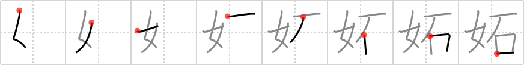

妬
← →
jealous

Reading:
On-Yomi: ト、ツ — Kun-Yomi: ねた.む、そね.む、つも.る、ふさ.ぐ
Heisig story:
It should not be hard to leep from the key word to the image of a woman who is jealous of the rock that another woman is sporting on the third finger of her left hand.
Koohii stories:
1) [astridtops] 18-5-2007(75): The jealous woman bashed the brains in of the guy who betrayed her, with a stone.
2) [oregum] 6-11-2011(14): WOMEN are JEALOUS of the STONE on my wife's ring.
3) [Neobeo] 9-1-2009(5): I'm jealous that my woman has a crush on The Rock.
4) [taikura] 10-12-2008(4): A jealous woman is as cold and hard as a rock.
5) [meeatcookies] 24-8-2012(3): The woman is jealous of her man, the rock star.